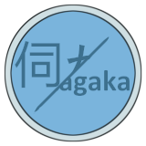
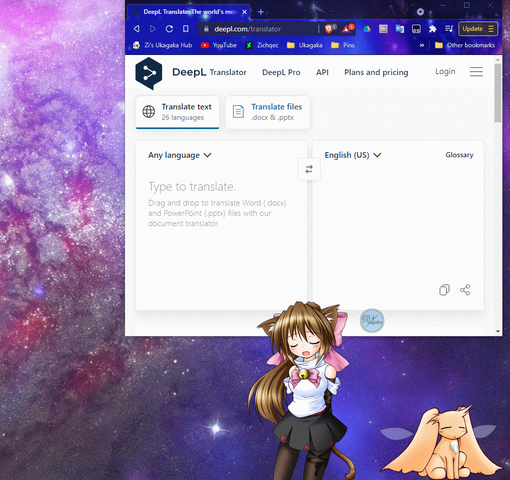

Ukatranslator

Ukatranslator is a ghost that helps you run other ghosts through machine translation! It does this by listening for the other ghost's dialogue, then removing the sakurascript tags, and allowing you to copy the results or automatically open them in the online versions of DeepL Translator or Google Translate! The translations are nowhere near as good as a real ghost translation, of course, but it can give you a general idea of what the ghost is saying!
There are a few customization options, such as nicknames for ghosts/characters so you always know who is talking, and which language you want it to translate to if you're using the auto translate option. You can also hide the translator completely from the config menu if you want it out of the way.
If you would like to translate Ukatranslator's menus into another language, please check the information in the readme! My hope is that this ghost will help bring Ukagaka to people all over the world, so every translation is greatly appreciated!
Ukatranslator ist ein Ghost, der dabei hilft andere Ghosts mit maschineller Übersetzung zu übersetzen! Er tut das indem er anderen Ghosts zuhört, die Sakuraskript-Tags entfernt und es dann möglich macht den Dialog zu kopieren oder automatisch im Online-Übersetzer von DeepL oder Google Translate zu öffnen! Die Übersetzungen reichen natürlich keineswegs an menschliche Übersetzung heran aber man kann so zumindest einen generellen Eindruck davon bekommen was ein Ghost sagt!
Es gibt einige Personalisierungseinstellungen wie zum Beispiel Spitznamen für Ghosts/Charaktere, damit man immer genau weiß wer gerade spricht, und in welche Sprache übersetzt werden soll, wenn die Option "Automatisch in Übersetzer öffnen" eingeschaltet ist. Man kann Ukatranslator über die Einstellungen auch komplett verstecken, falls man ihn aus dem Weg haben möchte.
Member of the Ukagaka/Ghost Development and Download webring
Previous Random Next